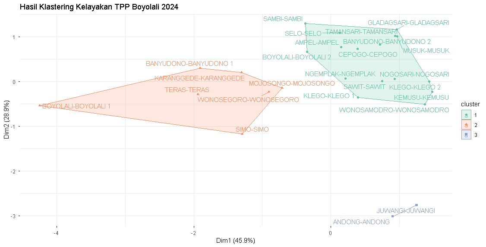

Deskripsi Singkat
Analisis ini menggunakan data kelayakan Tempat Pengelolaan Pangan (TPP) pada 25 Puskesmas di Kabupaten Boyolali tahun 2024.
Data terdiri dari empat variabel, yaitu Jasa Boga, Restoran, Depot Air Minum, dan Rumah Makan. Data diperoleh dari Dinas Komunikasi dan Informatika Kabupaten Boyolali.
Metode K-Medoids Clustering digunakan untuk mengelompokkan Puskesmas berdasarkan kemiripan karakteristik data. Tahapan analisis meliputi standardisasi data, deteksi outlier menggunakan Mahalanobis Distance, penentuan jumlah cluster menggunakan Silhouette Coefficient, dan penerapan K-Medoids.
Dinas Komunikasi dan Informatika Kabupaten Boyolali
Hasil Analisis

Hasil analisis menunjukkan bahwa jumlah cluster optimal adalah 3 cluster berdasarkan Silhouette Coefficient.
Ketiga cluster memiliki karakteristik yang berbeda berdasarkan variabel Tempat Pengelolaan Pangan (TPP).
Karakteristik TPP relatif sedang dan lebih merata.
Karakteristik TPP relatif tinggi.
Karakteristik TPP relatif lebih rendah dan cenderung tidak merata.
Kesimpulan
Metode K-Medoids berhasil mengelompokkan 25 Puskesmas menjadi 3 cluster berdasarkan karakteristik Tempat Pengelolaan Pangan (TPP).
Hasil clustering memberikan gambaran mengenai perbedaan karakteristik TPP antar kelompok Puskesmas di Kabupaten Boyolali.